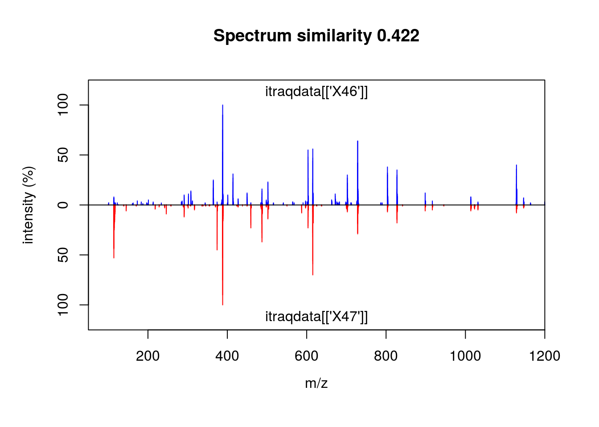
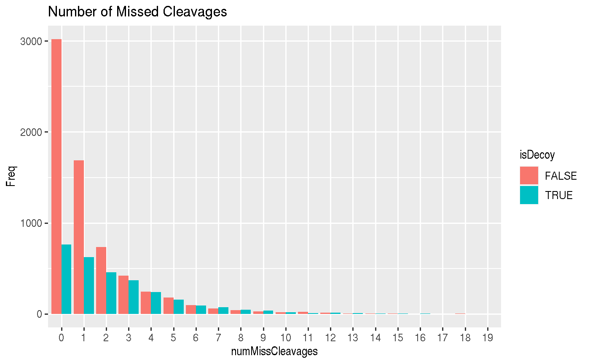

Using R for proteomics data analysis
Laurent Gatto
Lisa Breckels
Vlad Petyuk
Thomas Lin Pedersen
Sebastian Gibb
RforProteomics.RmdAbstract
This is the companion vignette to the ‘Visualisation of proteomics data using R and Bioconductor’ manuscript that presents an overview of R and Bioconductor software for mass spectrometry and proteomics data. It provides the code to reproduce the figures in the paper.
Introduction
This document illustrates some existing R infrastructure for the analysis of proteomics data. It presents the code for the use cases taken from (Laurent Gatto and Christoforou 2013,Gatto:2015). A pre-print of (Laurent Gatto and Christoforou 2013) available on arXiv and (L Gatto et al. 2015) is open access.
There are however numerous additional R resources distributed by the Bioconductor and CRAN repositories, as well as packages hosted on personal websites. Section @ref(sec:packages) tries to provide a wider picture of available packages, without going into details.
General R resources
The reader is expected to have basic R knowledge to find the document helpful. There are numerous R introductions freely available, some of which are listed below.
From the R project web-page:
- An Introduction to R is based on the former Notes on R, gives an introduction to the language and how to use R for doing statistical analysis and graphics (html and pdf.
- Several introductory tutorials in the contributed documentation section.
- The TeachingMaterial repository contains several sets of slides and vignettes about R programming.
Relevant background on the R software and its application to computational biology in general and proteomics in particular can also be found in (Laurent Gatto and Christoforou 2013). For details about the Bioconductor project, the reader is referred to (Gentleman et al. 2004).
Bioconductor resources
The Bioconductor offers many educational resources on its help page, in addition the package’s vignettes (vignettes are a requirement for Bioconductor packages). We want to draw the attention to the Bioconductor work flows that offer a cross-package overview about a specific topic. In particular, there is now a Mass spectrometry and proteomics data analysis work flow.
Getting help
All R packages come with ample documentation. Every command (function, class or method) a user is susceptible to use is documented. The documentation can be accessed by preceding the command by a ? in the R console. For example, to obtain help about the library function, that will be used in the next section, one would type ?library. In addition, all Bioconductor packages come with at least one vignette (this document is the vignette that comes with the RforProteomics package), a document that combines text and R code that is executed before the pdf is assembled. To look up all vignettes that come with a package, say RforProteomics and then open the vignette of interest, one uses the vignette function as illustrated below. More details can be found in ?vignette.
## list all the vignettes in the RforProteomics package
vignette(package = "RforProteomics")
## Open the vignette called RforProteomics
vignette("RforProteomics", package = "RforProteomics")
## or just
vignette("RforProteomics")R has several mailing lists. The most relevant here being the main R-help list, for discussion about problem and solutions using R, ideal for general R content and is not suitable for bioinformatics or proteomics questions. Bioconductor also offers several resources dedicated to bioinformatics matters and Bioconductor packages, in particular the main Bioconductor support forum for Bioconductor-related queries.
It is advised to read and comply to the posting guides (and here to maximise the chances to obtain good responses. It is important to specify the software versions using the sessionInfo() functions (see an example output at the end of this document. It the question involves some code, make sure to isolate the relevant portion and report it with your question, trying to make your code/example reproducible.
Installation
The package should be installed using as described below:
## only first time you install Bioconductor packages
if (!requireNamespace("BiocManager", quietly=TRUE))
install.packages("BiocManager")
## else
library("BiocManager")
BiocManager::install("RforProteomics")To install all dependencies and reproduce the code in the vignette, replace the last line in the code chunk above with:)
BiocManager::install("RforProteomics", dependencies = TRUE)Finally, the package can be loaded with
library("RforProteomics")##
## This is the 'RforProteomics' version 1.19.4.
##
## To get started, visit
## http://lgatto.github.com/RforProteomics/
##
## or, in R, open package vignettes by typing
## RforProteomics() # R/Bioc for proteomics overview
## RProtVis() # R/Bioc for proteomics visualisation
##
## For a full list of available documents:
## vignette(package='RforProteomics')##
## Attaching package: 'RforProteomics'## The following object is masked from 'package:stats':
##
## spectrumSee also the RforProteomics web page for more information on installation.
External dependencies
Some packages used in the document depend on external libraries that need to be installed prior to the R packages:
-
mzR depends on the Common Data Format (CDF) to CDF-based raw mass-spectrometry data. On Linux, the
libcdflibrary is required. On Debian-based systems, for instance, one needs to install thelibnetcdf-devpackage. -
IPPD (and others) depend on the XML package which requires the
libxml2infrastructure on Linux. On Debian-based systems, one needs to installlibxml2-dev. -
biomaRt performs on-line requests using the
curlinfrastructure. On Debian-based systems, you one needs to installlibcurl-devorlibcurl4-openssl-dev. -
MSGFplus is based on the
MS-GF+java program and thus requires Java 1.7 in order to work.
Obtaining the code
The code in this document describes all the examples presented in (Laurent Gatto and Christoforou 2013) and can be copy, pasted and executed. It is however more convenient to have it in a separate text file for better interaction with R to easily modify and explore it. This can be achieved with the Stangle function. One needs the Sweave source of this document (a document combining the narration and the R code) and the Stangle then specifically extracts the code chunks and produces a clean R source file. If the package is installed, the following code chunk will direct you to the RforProteomics.R file containing all the annotated source code contained in this document.
## gets the vignette source
rfile <- system.file("doc/RforProteomics.R",
package = "RforProteomics")
rfile## [1] ""Prepare the working environment
The packages that we will depend on to execute the examples will be loaded in the respective sections. Here, we pre-load packages that provide general functionality used throughout the document.
library("RColorBrewer") ## Color palettes## Warning: package 'RColorBrewer' was built under R version 3.6.0library("ggplot2") ## Convenient and nice plotting
library("reshape2") ## Flexibly reshape data## Warning: package 'reshape2' was built under R version 3.6.0Data standards and input/output
The mzR package
Raw MS data
The mzR package (Chambers et al. 2012) provides a unified interface to various mass spectrometry open formats. This code chunk, taken from the openMSfile documentation, illustrated how to open a connection to an raw data file. The example mzML data is taken from the msdata data package. The code below would also be applicable to an mzXML, mzData or netCDF file.
## load the required packages
library("mzR") ## the software package
library("msdata") ## the data package
## below, we extract the releavant example file
## from the local 'msdata' installation
filepath <- system.file("microtofq", package = "msdata")
file <- list.files(filepath, pattern="MM14.mzML",
full.names=TRUE, recursive = TRUE)
## creates a commection to the mzML file
mz <- openMSfile(file)
## demonstraction of data access
basename(fileName(mz))## [1] "MM14.mzML"runInfo(mz)## $scanCount
## [1] 112
##
## $lowMz
## [1] 0
##
## $highMz
## [1] 0
##
## $dStartTime
## [1] 270.334
##
## $dEndTime
## [1] 307.678
##
## $msLevels
## [1] 1
##
## $startTimeStamp
## [1] NAinstrumentInfo(mz)## $manufacturer
## [1] "Unknown"
##
## $model
## [1] "instrument model"
##
## $ionisation
## [1] "electrospray ionization"
##
## $analyzer
## [1] "mass analyzer type"
##
## $detector
## [1] "detector type"
##
## $software
## [1] "so_in_0 "
##
## $sample
## [1] "MM14_20uMsa_0"
##
## $source
## [1] ""## once finished, it is good to explicitely
## close the connection
close(mz)mzR is used by other packages, like MSnbase (L Gatto and Lilley 2012), TargetSearch (Cuadros-Inostroza et al. 2009) and xcms (C. A. Smith et al. 2006, Benton2008, Tautenhahn2008), that provide a higher level abstraction to the data.
Identification data
The mzR package also provides very fast access to mzIdentML data by leveraging proteowizard’s C++ parser.
file <- system.file("mzid", "Tandem.mzid.gz", package="msdata")
mzid <- openIDfile(file)
mzid## Identification file handle.
## Filename: Tandem.mzid.gz
## Number of psms: 171Once and mzRident identification file handle has been established, various data and metadata can be extracted, as illustrated below.
softwareInfo(mzid)## [1] "xtandem x! tandem CYCLONE (2010.06.01.5) "
## [2] "ProteoWizard MzIdentML 3.0.501 ProteoWizard"enzymes(mzid)## name nTermGain cTermGain minDistance missedCleavages
## 1 Trypsin H OH 0 1names(psms(mzid))## [1] "spectrumID" "chargeState"
## [3] "rank" "passThreshold"
## [5] "experimentalMassToCharge" "calculatedMassToCharge"
## [7] "sequence" "modNum"
## [9] "isDecoy" "post"
## [11] "pre" "start"
## [13] "end" "DatabaseAccess"
## [15] "DBseqLength" "DatabaseSeq"
## [17] "DatabaseDescription" "spectrum.title"
## [19] "acquisitionNum"head(psms(mzid))[, 1:13]## spectrumID chargeState rank passThreshold experimentalMassToCharge
## 1 index=12 3 1 FALSE 903.7209
## 2 index=285 3 1 FALSE 792.3792
## 3 index=83 3 1 FALSE 792.5295
## 4 index=21 3 1 FALSE 850.0782
## 5 index=198 3 1 FALSE 527.2592
## 6 index=13 2 1 FALSE 724.8816
## calculatedMassToCharge sequence modNum isDecoy post pre
## 1 903.4032 LCYIALDFDEEMKAAEDSSDIEK 2 FALSE S K
## 2 792.3899 KDLYGNVVLSGGTTMYEGIGER 1 FALSE L R
## 3 792.3899 KDLYGNVVLSGGTTMYEGIGER 1 FALSE L R
## 4 849.7635 VIDENFGLVEGLMTTVHAATGTQK 1 FALSE V K
## 5 527.2849 GVGGAIVLVLYDEMK 1 FALSE R R
## 6 724.3771 HAVGGRYSSLLCK 1 TRUE D K
## start end
## 1 217 239
## 2 292 313
## 3 292 313
## 4 842 865
## 5 297 311
## 6 392 404Handling MS2 identification data with mzID
The mzID package allows to load and manipulate MS2 data in the mzIdentML format. The main mzID function reads such a file and constructs an instance of class mzID.
library("mzID")
mzids <- list.files(system.file('extdata', package = 'mzID'),
pattern = '*.mzid', full.names = TRUE)
mzids## [1] "/home/lg390/R/x86_64-pc-linux-gnu-library/3.5/mzID/extdata/55merge_omssa.mzid"
## [2] "/home/lg390/R/x86_64-pc-linux-gnu-library/3.5/mzID/extdata/55merge_tandem.mzid"
## [3] "/home/lg390/R/x86_64-pc-linux-gnu-library/3.5/mzID/extdata/Mascot_MSMS_example1.0.mzid"
## [4] "/home/lg390/R/x86_64-pc-linux-gnu-library/3.5/mzID/extdata/Mascot_MSMS_example.mzid"
## [5] "/home/lg390/R/x86_64-pc-linux-gnu-library/3.5/mzID/extdata/Mascot_NA_example.mzid"
## [6] "/home/lg390/R/x86_64-pc-linux-gnu-library/3.5/mzID/extdata/mascot_pmf_example.mzid"
## [7] "/home/lg390/R/x86_64-pc-linux-gnu-library/3.5/mzID/extdata/Mascot_top_down_example.mzid"
## [8] "/home/lg390/R/x86_64-pc-linux-gnu-library/3.5/mzID/extdata/MPC_example_Multiple_search_engines.mzid"
## [9] "/home/lg390/R/x86_64-pc-linux-gnu-library/3.5/mzID/extdata/Sequest_example_ver1.1.mzid"id <- mzID(mzids[1])## reading 55merge_omssa.mzid... DONE!id## An mzID object
##
## Software used: OMSSA (version: NA)
##
## Rawfile: D:/TestSpace/NeoTestMarch2011/55merge.mgf
##
## Database: D:/Software/Databases/Neospora_3rndTryp/Neo_rndTryp_3times.fasta
##
## Number of scans: 39
## Number of PSM's: 99Multiple files can be parsed in one go, possibly in parallel if the environment supports it. When this is done an mzIDCollection object is returned:
ids <- mzID(mzids[1:2])
ids## An mzIDCollection object containing 2 samplesPeptides, scans, parameters, … can be extracted with the respective peptides, scans, parameters, … functions. The mzID object can also be converted into a data.frame using the flatten function.
fid <- flatten(id)
names(fid)## [1] "spectrumid" "spectrum title"
## [3] "acquisitionnum" "passthreshold"
## [5] "rank" "calculatedmasstocharge"
## [7] "experimentalmasstocharge" "chargestate"
## [9] "omssa:evalue" "omssa:pvalue"
## [11] "isdecoy" "post"
## [13] "pre" "end"
## [15] "start" "accession"
## [17] "length" "description"
## [19] "pepseq" "modified"
## [21] "modification" "idFile"
## [23] "spectrumFile" "databaseFile"dim(fid)## [1] 101 24
Raw data abstraction with MSnExp objects
MSnbase (L Gatto and Lilley 2012) provides base functions and classes for MS-based proteomics that allow facile data and meta-data processing, manipulation and plotting (see for instance figure below).
library("MSnbase")
## uses a simple dummy test included in the package
mzXML <- dir(system.file(package="MSnbase",dir="extdata"),
full.name=TRUE,
pattern="mzXML$")
basename(mzXML)## [1] "dummyiTRAQ.mzXML"## reads the raw data into and MSnExp instance
raw <- readMSData(mzXML, verbose = FALSE, centroided = TRUE)
raw## MSn experiment data ("MSnExp")
## Object size in memory: 0.18 Mb
## - - - Spectra data - - -
## MS level(s): 2
## Number of spectra: 5
## MSn retention times: 25:1 - 25:2 minutes
## - - - Processing information - - -
## Data loaded: Tue Oct 2 20:43:38 2018
## MSnbase version: 2.7.4
## - - - Meta data - - -
## phenoData
## rowNames: dummyiTRAQ.mzXML
## varLabels: sampleNames
## varMetadata: labelDescription
## Loaded from:
## dummyiTRAQ.mzXML
## protocolData: none
## featureData
## featureNames: F1.S1 F1.S2 ... F1.S5 (5 total)
## fvarLabels: spectrum
## fvarMetadata: labelDescription
## experimentData: use 'experimentData(object)'## Extract a single spectrum
raw[[3]]## Object of class "Spectrum2"
## Precursor: 645.3741
## Retention time: 25:2
## Charge: 2
## MSn level: 2
## Peaks count: 2125
## Total ion count: 150838188
The plot method can be used on experiments, i.e. spectrum collections (top), or individual spectra (bottom).
mgf read/write support
Read and write support for data in the mgf and mzTab formats are available via the readMgfData/writeMgfData and readMzTabData/writeMzTabData functions, respectively. An example for the latter is shown in the next section.
Quantitative proteomics
As an running example throughout this document, we will use a TMT 6-plex data set, PXD000001 to illustrate quantitative data processing. The code chunk below first downloads this data file from the ProteomeXchange server using the rpx package.
The mzTab format
The first code chunk downloads the mzTab data from the ProteomeXchange repository (Vizcaino et al. 2014).
## Experiment information
library("rpx")
px1 <- PXDataset("PXD000001")
px1## Object of class "PXDataset"
## Id: PXD000001 with 12 files
## [1] 'F063721.dat' ... [12] 'generated'
## Use 'pxfiles(.)' to see all files.pxfiles(px1)## [1] "F063721.dat"
## [2] "F063721.dat-mztab.txt"
## [3] "PRIDE_Exp_Complete_Ac_22134.xml.gz"
## [4] "PRIDE_Exp_mzData_Ac_22134.xml.gz"
## [5] "PXD000001_mztab.txt"
## [6] "README.txt"
## [7] "TMT_Erwinia_1uLSike_Top10HCD_isol2_45stepped_60min_01-20141210.mzML"
## [8] "TMT_Erwinia_1uLSike_Top10HCD_isol2_45stepped_60min_01-20141210.mzXML"
## [9] "TMT_Erwinia_1uLSike_Top10HCD_isol2_45stepped_60min_01.mzXML"
## [10] "TMT_Erwinia_1uLSike_Top10HCD_isol2_45stepped_60min_01.raw"
## [11] "erwinia_carotovora.fasta"
## [12] "generated"## Downloading the mzTab data
mztab <- pxget(px1, "PXD000001_mztab.txt")## Downloading 1 file## /home/lg390/dev/RforProteomics/vignettes/PXD000001_mztab.txt already present.mztab## [1] "/home/lg390/dev/RforProteomics/vignettes/PXD000001_mztab.txt"The code below loads the mzTab file into R and generates an MSnSet instance1, removes missing values and calculates protein intensities by summing the peptide quantitation data. The figure below illustrates the intensities for 5 proteins.
## Load mzTab peptide data
qnt <- readMzTabData(mztab, what = "PEP", version = "0.9")## Warning: Version 0.9 is deprecated. Please see '?readMzTabData' and '?
## MzTab' for details.sampleNames(qnt) <- reporterNames(TMT6)
head(exprs(qnt))## TMT6.126 TMT6.127 TMT6.128 TMT6.129 TMT6.130 TMT6.131
## 1 NA NA NA NA NA NA
## 2 10630132 11238708 12424917 10997763 9928972 10398534
## 3 NA NA NA NA NA NA
## 4 NA NA NA NA NA NA
## 5 11105690 12403253 13160903 12229367 11061660 10131218
## 6 1183431 1322371 1599088 1243715 1306602 1159064## remove missing values
qnt <- filterNA(qnt)
processingData(qnt)## - - - Processing information - - -
## mzTab read: Tue Oct 2 20:43:49 2018
## Subset [2351,6][1504,6] Tue Oct 2 20:43:49 2018
## Removed features with more than 0 NAs: Tue Oct 2 20:43:49 2018
## Dropped featureData's levels Tue Oct 2 20:43:49 2018
## MSnbase version: 2.7.4## combine into proteins
## - using the 'accession' feature meta data
## - sum the peptide intensities
protqnt <- combineFeatures(qnt,
groupBy = fData(qnt)$accession,
fun = sum)cls <- brewer.pal(5, "Set1")
matplot(t(tail(exprs(protqnt), n = 5)), type = "b",
lty = 1, col = cls,
ylab = "Protein intensity (summed peptides)",
xlab = "TMT reporters")
legend("topright", tail(featureNames(protqnt), n=5),
lty = 1, bty = "n", cex = .8, col = cls)Protein quantitation data.
qntS <- normalise(qnt, "sum")
qntV <- normalise(qntS, "vsn")
qntV2 <- normalise(qnt, "vsn")
acc <- c("P00489", "P00924",
"P02769", "P62894",
"ECA")
idx <- sapply(acc, grep, fData(qnt)$accession)
idx2 <- sapply(idx, head, 3)
small <- qntS[unlist(idx2), ]
idx3 <- sapply(idx, head, 10)
medium <- qntV[unlist(idx3), ]
m <- exprs(medium)
colnames(m) <- c("126", "127", "128",
"129", "130", "131")
rownames(m) <- fData(medium)$accession
rownames(m)[grep("CYC", rownames(m))] <- "CYT"
rownames(m)[grep("ENO", rownames(m))] <- "ENO"
rownames(m)[grep("ALB", rownames(m))] <- "BSA"
rownames(m)[grep("PYGM", rownames(m))] <- "PHO"
rownames(m)[grep("ECA", rownames(m))] <- "Background"
cls <- c(brewer.pal(length(unique(rownames(m)))-1, "Set1"),
"grey")
names(cls) <- unique(rownames(m))
wbcol <- colorRampPalette(c("white", "darkblue"))(256)heatmap(m, col = wbcol, RowSideColors=cls[rownames(m)])A heatmap.
dfr <- data.frame(exprs(small),
Protein = as.character(fData(small)$accession),
Feature = featureNames(small),
stringsAsFactors = FALSE)
colnames(dfr) <- c("126", "127", "128", "129", "130", "131",
"Protein", "Feature")
dfr$Protein[dfr$Protein == "sp|P00924|ENO1_YEAST"] <- "ENO"
dfr$Protein[dfr$Protein == "sp|P62894|CYC_BOVIN"] <- "CYT"
dfr$Protein[dfr$Protein == "sp|P02769|ALBU_BOVIN"] <- "BSA"
dfr$Protein[dfr$Protein == "sp|P00489|PYGM_RABIT"] <- "PHO"
dfr$Protein[grep("ECA", dfr$Protein)] <- "Background"
dfr2 <- melt(dfr)## Using Protein, Feature as id variablesggplot(aes(x = variable, y = value, colour = Protein),
data = dfr2) +
geom_point() +
geom_line(aes(group=as.factor(Feature)), alpha = 0.5) +
facet_grid(. ~ Protein) + theme(legend.position="none") +
labs(x = "Reporters", y = "Normalised intensity")
Spikes plot using r CRANpkg('ggplot2').
Third-party data
It is possible to import any arbitrary text-based spreadsheet as MSnSet object using either readMSnSet or readMSnSet2. The former takes three spreadsheets as input (for the expression data and the feature and sample meta-data). The latter uses a single spreadsheet and a vector of expression columns to populate the assay data and the feature meta-data. Detailed examples are provided in the MSnbase-io vignette, that can be consulted from R with vignette("MSnbase-io") or online.
Working with raw data
We reuse our dedicated px1 ProteomeXchange data object to download the raw data (in mzXML format) and load it with the readMSData from the MSnbase package that produces a raw data experiment object of class MSnExp (a new on-disk infrastructure is now available to access the raw data on disk on demand, rather than loading it all in memory, enabling the management of more and larger files - see the benchmarking vignette in the MSnbase package for details). The raw data is then quantified using the quantify method specifying the TMT 6-plex isobaric tags and a 7th peak of interest corresponding to the un-dissociated reporter tag peaks (see the MSnbase-demo vignette in MSnbase for details).
mzxml <- pxget(px1, "TMT_Erwinia_1uLSike_Top10HCD_isol2_45stepped_60min_01.mzXML")## Downloading 1 file## /home/lg390/dev/RforProteomics/vignettes/TMT_Erwinia_1uLSike_Top10HCD_isol2_45stepped_60min_01.mzXML already present.rawms <- readMSData(mzxml, centroided = TRUE, verbose = FALSE)
qntms <- quantify(rawms, reporters = TMT7, method = "max")
qntms## MSnSet (storageMode: lockedEnvironment)
## assayData: 6103 features, 7 samples
## element names: exprs
## protocolData: none
## phenoData
## sampleNames: TMT7.126 TMT7.127 ... TMT7.230 (7 total)
## varLabels: mz reporters
## varMetadata: labelDescription
## featureData
## featureNames: F1.S0001 F1.S0002 ... F1.S6103 (6103 total)
## fvarLabels: spectrum fileIdx ... collision.energy (12 total)
## fvarMetadata: labelDescription
## experimentData: use 'experimentData(object)'
## Annotation: No annotation
## - - - Processing information - - -
## Data loaded: Tue Oct 2 15:16:36 2018
## TMT7 quantification by max: Tue Oct 2 15:18:42 2018
## MSnbase version: 2.7.4Identification data in the mzIdentML format can be added to MSnExp or MSnSet instances with the addIdentificationData function. See the function documentation for examples.
d <- data.frame(Signal = rowSums(exprs(qntms)[, 1:6]),
Incomplete = exprs(qntms)[, 7])
d <- log(d)
cls <- rep("#00000050", nrow(qnt))
pch <- rep(1, nrow(qnt))
cls[grep("P02769", fData(qnt)$accession)] <- "gold4" ## BSA
cls[grep("P00924", fData(qnt)$accession)] <- "dodgerblue" ## ENO
cls[grep("P62894", fData(qnt)$accession)] <- "springgreen4" ## CYT
cls[grep("P00489", fData(qnt)$accession)] <- "darkorchid2" ## PHO
pch[grep("P02769", fData(qnt)$accession)] <- 19
pch[grep("P00924", fData(qnt)$accession)] <- 19
pch[grep("P62894", fData(qnt)$accession)] <- 19
pch[grep("P00489", fData(qnt)$accession)] <- 19mzp <- plotMzDelta(rawms, reporters = TMT6, verbose = FALSE) + ggtitle("")mzp## Warning: Removed 2 rows containing missing values (geom_vline).## Warning: Removed 2 rows containing missing values (geom_text).A m/z delta plot.
plot(Signal ~ Incomplete, data = d,
xlab = expression(Incomplete~dissociation),
ylab = expression(Sum~of~reporters~intensities),
pch = 19,
col = "#4582B380")
grid()
abline(0, 1, lty = "dotted")
abline(lm(Signal ~ Incomplete, data = d), col = "darkblue")Incomplete dissociation.
MAplot(qnt[, c(4, 2)], cex = .9, col = cls, pch = pch, show.statistics = FALSE)
MAplot on an MSnSet instance.
The MALDIquant package
This section illustrates some of MALDIquant’s data processing capabilities (Gibb and Strimmer 2012). The code is taken from the processing-peaks.R script downloaded from the package homepage.
Loading the data
## load packages
library("MALDIquant")
library("MALDIquantForeign")
## getting test data
datapath <-
file.path(system.file("Examples",
package = "readBrukerFlexData"),
"2010_05_19_Gibb_C8_A1")
dir(datapath)## [1] "0_A1" "0_A2"sA1 <- importBrukerFlex(datapath, verbose=FALSE)
# in the following we use only the first spectrum
s <- sA1[[1]]
summary(mass(s))## Min. 1st Qu. Median Mean 3rd Qu. Max.
## 999.9 2373.3 4331.4 4721.3 6874.2 10001.9summary(intensity(s))## Min. 1st Qu. Median Mean 3rd Qu. Max.
## 4 180 1562 2841 4656 32594head(as.matrix(s))## mass intensity
## [1,] 999.9388 11278
## [2,] 1000.1316 11350
## [3,] 1000.3244 10879
## [4,] 1000.5173 10684
## [5,] 1000.7101 10740
## [6,] 1000.9030 10947plot(s)
Spectrum plotting in r CRANpkg('MALDIquant').
{Preprocessing}
## sqrt transform (for variance stabilization)
s2 <- transformIntensity(s, method="sqrt")
s2## S4 class type : MassSpectrum
## Number of m/z values : 22431
## Range of m/z values : 999.939 - 10001.925
## Range of intensity values: 2e+00 - 1.805e+02
## Memory usage : 361.133 KiB
## Name : 2010_05_19_Gibb_C8_A1.A1
## File : /home/lg390/R/x86_64-pc-linux-gnu-library/3.5/readBrukerFlexData/Examples/2010_05_19_Gibb_C8_A1/0_A1/1/1SLin/fid## smoothing - 5 point moving average
s3 <- smoothIntensity(s2, method="MovingAverage", halfWindowSize=2)
s3## S4 class type : MassSpectrum
## Number of m/z values : 22431
## Range of m/z values : 999.939 - 10001.925
## Range of intensity values: 3.606e+00 - 1.792e+02
## Memory usage : 361.133 KiB
## Name : 2010_05_19_Gibb_C8_A1.A1
## File : /home/lg390/R/x86_64-pc-linux-gnu-library/3.5/readBrukerFlexData/Examples/2010_05_19_Gibb_C8_A1/0_A1/1/1SLin/fid## baseline subtraction
s4 <- removeBaseline(s3, method="SNIP")
s4## S4 class type : MassSpectrum
## Number of m/z values : 22431
## Range of m/z values : 999.939 - 10001.925
## Range of intensity values: 0e+00 - 1.404e+02
## Memory usage : 361.133 KiB
## Name : 2010_05_19_Gibb_C8_A1.A1
## File : /home/lg390/R/x86_64-pc-linux-gnu-library/3.5/readBrukerFlexData/Examples/2010_05_19_Gibb_C8_A1/0_A1/1/1SLin/fidPeak picking
## peak picking
p <- detectPeaks(s4)
length(p) # 181## [1] 186peak.data <- as.matrix(p) # extract peak informationpar(mfrow=c(2,3))
xl <- range(mass(s))
# use same xlim on all plots for better comparison
plot(s, sub="", main="1: raw", xlim=xl)
plot(s2, sub="", main="2: variance stabilisation", xlim=xl)
plot(s3, sub="", main="3: smoothing", xlim=xl)
plot(s4, sub="", main="4: base line correction", xlim=xl)
plot(s4, sub="", main="5: peak detection", xlim=xl)
points(p)
top20 <- intensity(p) %in% sort(intensity(p), decreasing=TRUE)[1:20]
labelPeaks(p, index=top20, underline=TRUE)
plot(p, sub="", main="6: peak plot", xlim=xl)
labelPeaks(p, index=top20, underline=TRUE)
Spectrum plotting in r CRANpkg('MALDIquant').
Working with peptide sequences
library(IPPD)
library(BRAIN)
atoms <- getAtomsFromSeq("SIVPSGASTGVHEALEMR")
unlist(atoms)## C H N O S
## 77 129 23 27 1library(Rdisop)
pepmol <- getMolecule(paste0(names(atoms),
unlist(atoms),
collapse = ""))
pepmol## $formula
## [1] "C77H129N23O27S"
##
## $score
## [1] 1
##
## $exactmass
## [1] 1839.915
##
## $charge
## [1] 0
##
## $parity
## [1] "e"
##
## $valid
## [1] "Valid"
##
## $DBE
## [1] 25
##
## $isotopes
## $isotopes[[1]]
## [,1] [,2] [,3] [,4] [,5]
## [1,] 1839.9148973 1840.9177412 1841.9196777 1.842921e+03 1.843923e+03
## [2,] 0.3427348 0.3353456 0.1960976 8.474135e-02 2.952833e-02
## [,6] [,7] [,8] [,9] [,10]
## [1,] 1.844925e+03 1.845927e+03 1.846928e+03 1.847930e+03 1.848932e+03
## [2,] 8.691735e-03 2.226358e-03 5.066488e-04 1.040196e-04 1.949686e-05##
library(OrgMassSpecR)## Loading required package: griddata(itraqdata)
simplottest <-
itraqdata[featureNames(itraqdata) %in% paste0("X", 46:47)]
sim <- SpectrumSimilarity(as(simplottest[[1]], "data.frame"),
as(simplottest[[2]], "data.frame"),
top.lab = "itraqdata[['X46']]",
bottom.lab = "itraqdata[['X47']]",
b = 25)
title(main = paste("Spectrum similarity", round(sim, 3)))
MonoisotopicMass(formula = list(C = 2, O = 1, H=6))## [1] 46.04186molecule <- getMolecule("C2H5OH")
molecule$exactmass## [1] 46.04186## x11()
## plot(t(.pepmol$isotopes[[1]]), type = "h")
## x <- IsotopicDistribution(formula = list(C = 2, O = 1, H=6))
## t(molecule$isotopes[[1]])
## par(mfrow = c(2,1))
## plot(t(molecule$isotopes[[1]]), type = "h")
## plot(x[, c(1,3)], type = "h")
## data(myo500)
## masses <- c(147.053, 148.056)
## intensities <- c(93, 5.8)
## molecules <- decomposeIsotopes(masses, intensities)
## experimental eno peptides
exppep <-
as.character(fData(qnt[grep("ENO", fData(qnt)[, 2]), ])[, 1]) ## 13
minlength <- min(nchar(exppep))
if (!file.exists("P00924.fasta"))
eno <- download.file("http://www.uniprot.org/uniprot/P00924.fasta",
destfile = "P00924.fasta")
eno <- paste(readLines("P00924.fasta")[-1], collapse = "")
enopep <- Digest(eno, missed = 1)
nrow(enopep) ## 103## [1] 103sum(nchar(enopep$peptide) >= minlength) ## 68## [1] 0pepcnt <- enopep[enopep[, 1] %in% exppep, ]
nrow(pepcnt) ## 13## [1] 0The following code chunks demonstrate how to use the cleaver package for in-silico cleavage of polypeptides, e.g. cleaving of Gastric juice peptide 1 (P01358) using Trypsin:
library(cleaver)
cleave("LAAGKVEDSD", enzym = "trypsin")## $LAAGKVEDSD
## [1] "LAAGK" "VEDSD"Sometimes cleavage is not perfect and the enzym miss some cleavage positions:
## miss one cleavage position
cleave("LAAGKVEDSD", enzym = "trypsin", missedCleavages = 1)## $LAAGKVEDSD
## [1] "LAAGKVEDSD"## miss zero or one cleavage positions
cleave("LAAGKVEDSD", enzym = "trypsin", missedCleavages = 0:1)## $LAAGKVEDSD
## [1] "LAAGK" "VEDSD" "LAAGKVEDSD"Example code to generate an Texshade image to be included directly in a Latex document or R vignette is presented below. The R code generates a Texshade environment and the annotated sequence display code that is written to a TeX file that can itself be included into a LaTeX or Sweave document.
seq1file <- "seq1.tex"
cat("\\begin{texshade}{Figures/P00924.fasta}
\\setsize{numbering}{footnotesize}
\\setsize{residues}{footnotesize}
\\residuesperline*{70}
\\shadingmode{functional}
\\hideconsensus
\\vsepspace{1mm}
\\hidenames
\\noblockskip\n", file = seq1file)
tmp <- sapply(1:nrow(pepcnt), function(i) {
col <- ifelse((i %% 2) == 0, "Blue", "RoyalBlue")
cat("\\shaderegion{1}{", pepcnt$start[i], "..", pepcnt$stop[i], "}{White}{", col, "}\n",
file = seq1file, append = TRUE)
})
cat("\\end{texshade}
\\caption{Visualising observed peptides for the Yeast enolase protein. Peptides are shaded in blue and black.
The last peptide is a mis-cleavage and overlaps with \`IEEELGDNAVFAGENFHHGDK`.}
\ {#fig:seq}
\\end{center}
\\end{figure}\n\n",
file = seq1file, append = TRUE)N15 incorporation
## 15N incorporation rates from 0, 0.1, ..., 0.9, 0.95, 1
incrate <- c(seq(0, 0.9, 0.1), 0.95, 1)
inc <- lapply(incrate, function(inc)
IsotopicDistributionN("YEVQGEVFTKPQLWP", inc))
par(mfrow = c(4,3))
for (i in 1:length(inc))
plot(inc[[i]][, c(1, 3)], xlim = c(1823, 1848), type = "h",
main = paste0("15N incorporation at ", incrate[i]*100, "%"))
Isotopic envelope for the YEVQGEVFTKPQLWP peptide at different N15 incorporation rates
The isobar package
The isobar package (Breitwieser et al. 2011) provides methods for the statistical analysis of isobarically tagged MS2 experiments.
Note
The isobar code chunks were failing in the context of the vignette and aren’t being evaludated at the moment.
library("isobar")
## Prepare the PXD000001 data for isobar analysis
.ions <- exprs(qnt)
.mass <- matrix(TMT6@mz, nrow(qnt), byrow=TRUE, ncol = 6)
colnames(.ions) <- colnames(.mass) <-
reporterTagNames(new("TMT6plexSpectra"))
rownames(.ions) <- rownames(.mass) <-
paste(fData(qnt)$accession, fData(qnt)$sequence, sep = ".")
pgtbl <- data.frame(spectrum = rownames(.ions),
peptide = fData(qnt)$sequence,
modif = ":",
start.pos = 1,
protein = fData(qnt)$accession,
accession = fData(qnt)$accession)
x <- new("TMT6plexSpectra", pgtbl, .ions, .mass)
featureData(x)$proteins <- as.character(fData(qnt)$accession)
x <- correctIsotopeImpurities(x) ## using identity matrix here
x <- isobar::normalize(x, per.file = FALSE)
## spikes
spks <- c(protein.g(proteinGroup(x), "P00489"),
protein.g(proteinGroup(x), "P00924"),
protein.g(proteinGroup(x), "P02769"),
protein.g(proteinGroup(x), "P62894"))
cls2 <- rep("#00000040", nrow(x))
pch2 <- rep(1, nrow(x))
cls2[grep("P02769", featureNames(x))] <- "gold4" ## BSA
cls2[grep("P00924", featureNames(x))] <- "dodgerblue" ## ENO
cls2[grep("P62894", featureNames(x))] <- "springgreen4" ## CYT
cls2[grep("P00489", featureNames(x))] <- "darkorchid2" ## PHO
pch2[grep("P02769", featureNames(x))] <- 19
pch2[grep("P00924", featureNames(x))] <- 19
pch2[grep("P62894", featureNames(x))] <- 19
pch2[grep("P00489", featureNames(x))] <- 19
nm <- NoiseModel(x)
ib.background <- subsetIBSpectra(x, protein=spks,
direction = "exclude")
nm.background <- NoiseModel(ib.background)
ib.spks <- subsetIBSpectra(x, protein = spks,
direction="include",
specificity="reporter-specific")
nm.spks <- NoiseModel(ib.spks, one.to.one=FALSE, pool=TRUE)
ratios <- 10^estimateRatio(x, nm,
channel1="127", channel2="129",
protein = spks,
combine = FALSE)[, "lratio"]
res <- estimateRatio(x, nm,
channel1="127", channel2="129",
protein = unique(fData(x)$proteins),
combine = FALSE,
sign.level = 0.01)[, c(1, 2, 6, 8)]
res <- as.data.frame(res)
res$lratio <- -(res$lratio)
cls3 <- rep("#00000050", nrow(res))
pch3 <- rep(1, nrow(res))
cls3[grep("P02769", rownames(res))] <- "gold4" ## BSA
cls3[grep("P00924", rownames(res))] <- "dodgerblue" ## ENO
cls3[grep("P62894", rownames(res))] <- "springgreen4" ## CYT
cls3[grep("P00489", rownames(res))] <- "darkorchid2" ## PHO
pch3[grep("P02769", rownames(res))] <- 19
pch3[grep("P00924", rownames(res))] <- 19
pch3[grep("P62894", rownames(res))] <- 19
pch3[grep("P00489", rownames(res))] <- 19
rat.exp <- c(PHO = 2/2,
ENO = 5/1,
BSA = 2.5/10,
CYT = 1/1)maplot(x,
noise.model = c(nm.background, nm.spks, nm),
channel1="127", channel2="129",
pch = 19, col = cls2,
main = "Spectra MA plot")
abline(h = 1, lty = "dashed", col = "grey")
legend("topright",
c("BSA", "ENO", "CYT", "PHO"),
pch = 19, col = c("gold4", "dodgerblue",
"springgreen4", "darkorchid2"),
bty = "n", cex = .7)Result from the isobar pipeline.
The DEP package
The DEP package supports analysis of label-free and TMT pipelines using, as described in its vignette. These can be used with MSnSet objects by converting them to/from SummarizedExperiment objects:
data(msnset)
se <- as(msnset, "SummarizedExperiment")## Loading required namespace: SummarizedExperimentse## class: SummarizedExperiment
## dim: 55 4
## metadata(3): MSnbaseFiles MSnbaseProcessing MSnbaseVersion
## assays(1): ''
## rownames(55): X1 X10 ... X8 X9
## rowData names(15): spectrum ProteinAccession ...
## acquisition.number collision.energy
## colnames(4): iTRAQ4.114 iTRAQ4.115 iTRAQ4.116 iTRAQ4.117
## colData names(2): mz reportersms <- as(se, "MSnSet")
ms## MSnSet (storageMode: lockedEnvironment)
## assayData: 55 features, 4 samples
## element names: exprs
## protocolData: none
## phenoData
## sampleNames: iTRAQ4.114 iTRAQ4.115 iTRAQ4.116 iTRAQ4.117
## varLabels: mz reporters
## varMetadata: labelDescription
## featureData
## featureNames: X1 X10 ... X9 (55 total)
## fvarLabels: spectrum ProteinAccession ... collision.energy (15
## total)
## fvarMetadata: labelDescription
## experimentData: use 'experimentData(object)'
## Annotation:
## - - - Processing information - - -
## MSnbase version: 2.7.4The synapter package
The synapter (Bond et al. 2013) package comes with a detailed vignette that describes how to prepare the MSE data and then process it in R. Several interfaces are available provided the user with maximum control, easy batch processing capabilities or a graphical user interface. The conversion into MSnSet instances and filter and combination thereof as well as statistical analysis are also described.
## open the synapter vignette
library("synapter")
synapterGuide()MS2 spectra identification
At the moment two packages allow the user to run peptide identifications from within R. Each of the packages interface to an external peptide database search tool and have more or less the same workflow, though their syntax differs:
- Prepare the input data.
- Run the search.
- Import the search results and extract the peptides and proteins
X! Tandem
Following Bioconductor 2.12 the rTANDEM package provides the means to run the popular X!Tandem software (Craig and Beavis 2004).
Using example code/data from the rTANDEM vignette/package, the following is an example of a typical workflow
Preparation of the input data
library(rTANDEM)
taxonomy <- rTTaxo(taxon = "yeast",
format = "peptide",
URL = system.file(
"extdata/fasta/scd.fasta.pro",
package="rTANDEM"))
param <- rTParam()
param <- setParamValue(param,
'protein', 'taxon',
value="yeast")
param <- setParamValue(param, 'list path',
'taxonomy information', taxonomy)
param <- setParamValue(param,
'list path', 'default parameters',
value = system.file(
"extdata/default_input.xml",
package="rTANDEM"))
param <- setParamValue(param, 'spectrum', 'path',
value = system.file(
"extdata/test_spectra.mgf",
package="rTANDEM"))
param <- setParamValue(param, 'output', 'xsl path',
value = system.file(
"extdata/tandem-input-style.xsl",
package="rTANDEM"))
param <- setParamValue(param, 'output', 'path',
value = paste(getwd(),
"output.xml", sep="/"))Performing the search
The analysis is run using the tandem function (see also the rtandem function), which returns the results data file path (only the file name is displayed below).
resultPath <- tandem(param)## Loading spectra
## (mgf). loaded.
## Spectra matching criteria = 242
## Starting threads . started.
## Computing models:
## testin
## sequences modelled = 5 ks
## Model refinement:
## partial cleavage ..... done.
## unanticipated cleavage ..... done.
## modified N-terminus ..... done.
## finishing refinement ... done.
## Creating report:
## initial calculations ..... done.
## sorting ..... done.
## finding repeats ..... done.
## evaluating results ..... done.
## calculating expectations ..... done.
## writing results ..... done.
##
## Valid models = 40
## Unique models = 41
## Estimated false positives = 1 +/- 1basename(resultPath)## [1] "output.2018_10_02_20_44_09.t.xml"Import and analyse results
res <- GetResultsFromXML(resultPath)
## the inferred proteins
proteins <- GetProteins(res,
log.expect = -1.3,
min.peptides = 2)
proteins[, -(4:5), with = FALSE]## uid expect.value label description num.peptides
## 1: 576 -27.2 YCR012W YCR012W 5
## 2: 1811 -14.5 YFR053C YFR053C 3
## 3: 2301 -12.8 YGR254W YGR254W 3
## 4: 4 -12.0 YAL005C YAL005C 3
## 5: 3517 -12.0 YLL024C YLL024C 3
## 6: 3328 -10.3 YKL152C YKL152C 2
## 7: 3386 -10.1 YKL216W YKL216W 2
## 8: 2281 -7.9 YGR234W YGR234W 2
## 9: 2568 -7.5 YHR174W YHR174W 2
## 10: 2044 -7.1 YGL253W YGL253W 2## the identified peptides for YFR053C
peptides <- GetPeptides(protein.uid = 1811,
results = res,
expect = 0.05)
peptides[, c(1:4, 9, 10:16), with = FALSE]## pep.id prot.uid spectrum.id spectrum.mh expect.value tandem.score
## 1: 102.1.1 1811 102 942.5147 0.00660 31.9
## 2: 250.1.1 1811 250 1212.5610 0.00043 35.0
## 3: 60.1.1 1811 60 863.4933 0.00870 21.7
## mh delta peak.count missed.cleavages start.position
## 1: 942.5370 -0.0220 NA 0 166
## 2: 1212.5531 0.0079 NA 0 437
## 3: 863.4985 -0.0052 NA 0 309
## end.position
## 1: 173
## 2: 447
## 3: 315More details are provided in the vignette available with vignette("rTANDEM"), for instance the extraction of degenerated peptides, i.e. peptides found in multiple proteins.
The shinyTANDEM package offers a web-based graphical interface to rTANDEM.
MS-GF+
With the release of Bioconductor 3.0 the MSGFplus package has provided an interface to MS-GF+ (Kim, Gupta, and Pevzner 2008, Kim:2010ks). The package vignette describe in detail the different ways an MS-GF+ analysis can be initiated and only a simple example will be given here:
Preparation of the input data
library("MSGFplus")
## Create a parameter object with a set of parameters
param <- msgfPar(database = system.file('extdata',
'milk-proteins.fasta',
package='MSGFplus'),
tolerance = '10 ppm',
enzyme = 'Trypsin')
## Add parameters after creation
instrument(param) <- 'QExactive'
tda(param) <- TRUE
ntt(param) <- 2
## Add expected modifications
mods(param)[[1]] <- msgfParModification('Carbamidomethyl',
composition = 'C2H3N1O1',
residues = 'C',
type = 'fix',
position = 'any')
mods(param)[[2]] <- msgfParModification(name = 'Oxidation',
mass = 15.994915,
residues = 'M',
type = 'opt',
position = 'any')
nMod(param) <- 2 # Number of allowed modifications per peptide
## Get a summary of your parameters
show(param)## An msgfPar object
##
## Database: /home/lg390/R/x86_64-pc-linux-gnu-library/3.5/MSGFplus/extdata/milk-proteins.fasta
## Tolerance: 10 ppm
## TDA: TRUE
## Instrument: 3: QExactive
## Enzyme: 1: Trypsin
## No. tolerable termini: 2
##
## Modifications:
##
## Number of modifications per peptide: 2
##
## Carbamidomethyl: C2H3N1O1, C, fix, any
## Oxidation: 15.99492, M, opt, anyPerforming the search
Initiating the search is done using the runMSGF method. As a minimum it takes a parameter object and a list of raw data files and performs the search for each data file in sequence. More specialised operations are also possible such as running it asynchronously, but interested readers should refer to the MSGFplus vignette for additional information.
The first time a search is initialised the MS-GF+ code is downloaded, so be sure to have an active internet connection (only applies to the first time a search is run).
result <- runMSGF(param, 'path/to/a/rawfile.mzML')Import and analyse results
By default MSGFplus imports the results automatically using mzID. If only one file was analysed, the return value is an mzID object; if multiple files are analysed at once the return value is an mzIDCollection object.
If import=FALSE the results are not imported and can be accessed at a later time using the mzID package.
Running MS-GF+ through a GUI
MSGFplus comes with a sister package, MSGFgui, which provide a graphic interface to setting up and running MS-GF+ through R. Besides facilitating MS-GF+ analyses, which is arguably just as easy from the command line, it provides an intuitive way to investigate and evaluate the resulting identification data.
A screenshot of MSGFgui
The figure above shows an example of using MSGFgui. It is possible to gradually drill down in the results starting from the protein level and ending at the raw spectrum level. mzIdentML files already created with MS-GF+ (using MSGFplus or in other ways) can easily be imported into the gui to take advantage of the visualisation features, and results can be exported as either rds (for R), xlsx (for excel) or txt (for everything else) files.
Post-search Filtering of MS/MS IDs Using MSnID
The main purpose of MSnID package is to make sure that the peptide and protein identifications resulting from MS/MS searches are sufficiently confident for a given application.} MS/MS peptide and protein identification is a process that prone to uncertanities. A typical and currently most reliable way to quantify uncertainty in the list of identify spectra, peptides or proteins relies on so-called decoy database. For bottom-up (i.e. involving protein digestion) approaches a common way to construct a decoy database is simple inversion of protein amino-acid sequences. If the spectrum matches to normal protein sequence it can be true or false match. Matches to decoy part of the database are false only (excluding the palindromes). Therefore the false discovery rate (FDR) of identifications can be estimated as ratio of hits to decoy over normal parts of the protein sequence database. There are multiple levels of identification that FDR can be estimated for. First, is at the level of peptide/protein- to-spectrum matches. Second is at the level of unique peptide sequences. Note, true peptides tend to be identified by more then one spectrum. False peptide tend to be sporadic. Therefore, after collapsing the redundant peptide identifications from multiple spectra to the level of unique peptide sequence, the FDR typically increases. The extend of FDR increase depends on the type and complexity of the sample. The same trend is true for estimating the identification FDR at the protein level. True proteins tend to be identified with multiple peptides, while false protein identifications are commonly covered only by one peptide. Therefore FDR estimate tend to be even higher for protein level compare to peptide level. The estimation of the FDR is also affected by the number of LC-MS (runs) datasets in the experiment. Again, true identifications tend to be more consistent from run to run, while false are sporadic. After collapsing the redundancy across the runs, the number of true identification reduces much stronger compare to false identifications. Therefore, the peptide and protein FDR estimates need to be re-evaluated. The main objective of the MSnID package is to provide convenience tools for handling tasks on estimation of FDR, defining and optimizing the filtering criteria and ensuring confidence in MS/MS identification data. The user can specify the criteria for filtering the data (e.g. goodness or p-value of matching of experimental and theoretical fragmentation mass spectrum, deviation of theoretical from experimentally measured mass, presence of missed cleavages in the peptide sequence, etc), evaluate the performance of the filter judging by FDRs at spectrum, peptide and protein levels, and finally optimize the filter to achieve the maximum number of identifications while not exceeding maximally allowed FDR upper threshold.
Starting Project and Importing Data
To start a project one have to specify a directory. Currently the only use of the directory is for storing cached results.
library("MSnID")##
## Attaching package: 'MSnID'## The following object is masked from 'package:ProtGenerics':
##
## peptidesmsnid <- MSnID(".")## Note, the anticipated/suggested columns in the
## peptide-to-spectrum matching results are:
## -----------------------------------------------
## accession
## calculatedMassToCharge
## chargeState
## experimentalMassToCharge
## isDecoy
## peptide
## spectrumFile
## spectrumIDData can imported as data.frame or read from mzIdentML file.
PSMresults <- read.delim(system.file("extdata", "human_brain.txt",
package="MSnID"),
stringsAsFactors=FALSE)
psms(msnid) <- PSMresults
show(msnid)## MSnID object
## Working directory: "."
## #Spectrum Files: 1
## #PSMs: 767 at 49 % FDR
## #peptides: 687 at 57 % FDR
## #accessions: 665 at 65 % FDRmzids <- system.file("extdata", "c_elegans.mzid.gz", package="MSnID")
msnid <- read_mzIDs(msnid, mzids)## Reading from mzIdentMLs ...## reading c_elegans.mzid.gz... DONE!show(msnid)## MSnID object
## Working directory: "."
## #Spectrum Files: 1
## #PSMs: 12263 at 36 % FDR
## #peptides: 9489 at 44 % FDR
## #accessions: 7414 at 76 % FDRAnalysis of Peptide Sequences
A particular properties of peptide sequences we are interested in are
- irregular cleavages at the termini of the peptides and
- missing cleavage site within the peptide sequences.
A particular properties of peptide sequences we are interested in are (1) irregular cleavages at the termini of the peptides and (2) missing cleavage site within the peptide sequences:
- Counting the number of irregular cleavage termimi (0, 1 or 2) in peptides sequence creates a new column
numIrregCleavages. - Counting the number of missed cleavages in peptides sequence correspondingly creates a
numMissCleavagescolumn.
The default regular expressions for the validCleavagePattern and missedCleavagePattern correspond to trypsin specificity.
msnid <- assess_termini(msnid, validCleavagePattern="[KR]\\.[^P]")
msnid <- assess_missed_cleavages(msnid, missedCleavagePattern="[KR](?=[^P$])")
prop.table(table(msnid$numIrregCleavages))##
## 0 1 2
## 0.801574390 0.189294149 0.009131462Now the object has two more columns, numIrregCleavages and numMissCleavages, evidently corresponding to the number of termini with irregular cleavages and number of missed cleavages within the peptide sequence. The figure below shows that peptides with 2 or more missed cleavages are likely to be false identifications.
pepCleav <- unique(psms(msnid)[,c("numMissCleavages", "isDecoy", "peptide")])
pepCleav <- as.data.frame(table(pepCleav[,c("numMissCleavages", "isDecoy")]))
library("ggplot2")
ggplot(pepCleav, aes(x=numMissCleavages, y=Freq, fill=isDecoy)) +
geom_bar(stat='identity', position='dodge') +
ggtitle("Number of Missed Cleavages")
Defining the Filter
The criteria that will be used for filtering the MS/MS data has to be present in the MSnID object. We will use -log10 transformed MS-GF+ Spectrum E-value, reflecting the goodness of match experimental and theoretical fragmentation patterns as one the filtering criteria. Let’s store it under the “msmsScore” name. The score density distribution shows that it is a good discriminant between non-decoy (red) and decoy hits (green).
For alternative MS/MS search engines refer to the engine-specific manual for the names of parameters reflecting the quality of MS/MS spectra matching. Examples of such parameters are E-Value for X!Tandem and XCorr and $\Delta$Cn2 for SEQUEST.
As a second criterion we will be using the absolute mass measurement error (in ppm units) of the parent ion. The mass measurement errors tend to be small for non-decoy (enriched with real identificaiton) hits (red line) and is effectively uniformly distributed for decoy hits.
msnid$msmsScore <- -log10(msnid$`MS-GF:SpecEValue`)
msnid$absParentMassErrorPPM <- abs(mass_measurement_error(msnid))MS/MS fiters are handled by a special MSnIDFilter class objects. Individual filtering criteria can be set by name (that is present in names(msnid)), comparison operator (>, <, = , …) defining if we should retain hits with higher or lower given the threshold and finally the threshold value itself. The filter below set in such a way that retains only those matches that has less then 5 ppm of parent ion mass measurement error and more the \(10^7\) MS-GF:SpecEValue.
filtObj <- MSnIDFilter(msnid)
filtObj$absParentMassErrorPPM <- list(comparison="<", threshold=5.0)
filtObj$msmsScore <- list(comparison=">", threshold=8.0)
show(filtObj)## MSnIDFilter object
## (absParentMassErrorPPM < 5) & (msmsScore > 8)The stringency of the filter can be evaluated at different levels.
evaluate_filter(msnid, filtObj, level="PSM")## fdr n
## PSM 0.00272745 5147evaluate_filter(msnid, filtObj, level="peptide")## fdr n
## peptide 0.00424371 3313evaluate_filter(msnid, filtObj, level="accession")## fdr n
## accession 0.01770658 1207Optimizing the Filter
The threshold values in the example above are not necessarily optimal and set just be in the range of probable values. Filters can be optimized to ensure maximum number of identifications (peptide-to-spectrum matches, unique peptide sequences or proteins) within a given FDR upper limit.
First, the filter can be optimized simply by stepping through individual parameters and their combinations. The idea has been described in (Piehowski et al. 2013). The resulting MSnIDFilter object can be used for final data filtering or can be used as a good starting parameters for follow-up refining optimizations with more advanced algorithms.
filtObj.grid <- optimize_filter(filtObj, msnid, fdr.max=0.01,
method="Grid", level="peptide",
n.iter=500)
show(filtObj.grid)## MSnIDFilter object
## (absParentMassErrorPPM < 10) & (msmsScore > 7.8)The resulting filtObj.grid can be further fine tuned with such optimization routines as simulated annealing or Nelder-Mead optimization.
filtObj.nm <- optimize_filter(filtObj.grid, msnid, fdr.max=0.01,
method="Nelder-Mead", level="peptide",
n.iter=500)
show(filtObj.nm)## MSnIDFilter object
## (absParentMassErrorPPM < 10) & (msmsScore > 7.8)Evaluate non-optimized and optimized filters.
evaluate_filter(msnid, filtObj, level="peptide")## fdr n
## peptide 0.00424371 3313evaluate_filter(msnid, filtObj.grid, level="peptide")## fdr n
## peptide 0.009220702 3393evaluate_filter(msnid, filtObj.nm, level="peptide")## fdr n
## peptide 0.009777778 3408Finally applying filter to remove predominantly false identifications.
msnid <- apply_filter(msnid, filtObj.nm)
show(msnid)## MSnID object
## Working directory: "."
## #Spectrum Files: 1
## #PSMs: 5288 at 0.63 % FDR
## #peptides: 3408 at 0.98 % FDR
## #accessions: 1253 at 3.8 % FDRRemoving hits to decoy and contaminant sequences using the same apply_filter method.
msnid <- apply_filter(msnid, "isDecoy == FALSE")
show(msnid)## MSnID object
## Working directory: "."
## #Spectrum Files: 1
## #PSMs: 5255 at 0 % FDR
## #peptides: 3375 at 0 % FDR
## #accessions: 1207 at 0 % FDRmsnid <- apply_filter(msnid, "!grepl('Contaminant',accession)")
show(msnid)## MSnID object
## Working directory: "."
## #Spectrum Files: 1
## #PSMs: 5246 at 0 % FDR
## #peptides: 3368 at 0 % FDR
## #accessions: 1205 at 0 % FDRInterface with Other Bioconductor Packages
One can extract the entire PSMs tables as data.frame or data.table
If only interested in the non-redundant list of confidently identified peptides or proteins
peps <- peptides(msnid)
head(peps)## [1] "K.AISQIQEYVDYYGGSGVQHIALNTSDIITAIEALR.A"
## [2] "K.SAGSGYLVGDSLTFVDLLVAQHTADLLAANAALLDEFPQFK.A"
## [3] "K.NSIFTNVAETANGEYFWEGLEDEIADKNVDITTWLGEK.W"
## [4] "R.VFCLLGDGESAEGSVWEAAAFASIYKLDNLVAIVDVNR.L"
## [5] "R.TTDSDGNNTGLDLYTVDQVEHSNYVEQNFLDFIFVFR.K"
## [6] "R.KFDADGSGKLEFDEFCALVYTVANTVDKETLEKELR.E"prots <- accessions(msnid)
head(prots)## [1] "CE02347" "CE07055" "CE12728" "CE36358" "CE36359" "CE36360"prots <- proteins(msnid) # may be more intuitive then accessions
head(prots)## [1] "CE02347" "CE07055" "CE12728" "CE36358" "CE36359" "CE36360"The MSnID package is aimed at providing convenience functionality to handle MS/MS identifications. Quantification per se is outside of the scope of the package. The only type of quantitation that can be seamlessly tied with MS/MS identification analysis is so-called spectral counting approach. In such an approach a peptide abundance is considered to be directly proportional to the number of matched MS/MS spectra. In its turn protein abunance is proportional to the sum of the number of spectra of the matching peptides. The MSnID object can be converted to an MSnSet object defined in MSnbase that extends generic Bioconductor eSet class to quantitative proteomics data. The spectral count data can be analyzed with msmsEDA, msmsTests or DESeq packages.
msnset <- as(msnid, "MSnSet")
library("MSnbase")
head(fData(msnset))## peptide
## A.AGLKPTQAMVTK.A A.AGLKPTQAMVTK.A
## A.AVLEYLAAEVLELAGNAAR.D A.AVLEYLAAEVLELAGNAAR.D
## A.DCLHCICMR.E A.DCLHCICMR.E
## A.DLFTSIADMQNLLETER.N A.DLFTSIADMQNLLETER.N
## A.EKKRKAAETSLMEK.D A.EKKRKAAETSLMEK.D
## A.EQLPEKFYGTFDLDHSENFDEYLTAK.G A.EQLPEKFYGTFDLDHSENFDEYLTAK.G
## accession
## A.AGLKPTQAMVTK.A CE01236, CE30652
## A.AVLEYLAAEVLELAGNAAR.D CE04501, CE05477
## A.DCLHCICMR.E CE04442, CE17549, CE24850, CE34002
## A.DLFTSIADMQNLLETER.N CE20261
## A.EKKRKAAETSLMEK.D CE27133
## A.EQLPEKFYGTFDLDHSENFDEYLTAK.G CE04532head(exprs(msnset))## c_elegans_A_3_1_21Apr10_Draco_10-03-04_dta.txt
## A.AGLKPTQAMVTK.A 1
## A.AVLEYLAAEVLELAGNAAR.D 1
## A.DCLHCICMR.E 1
## A.DLFTSIADMQNLLETER.N 1
## A.EKKRKAAETSLMEK.D 1
## A.EQLPEKFYGTFDLDHSENFDEYLTAK.G 1Note, the convertion from MSnID to MSnSet uses peptides as features. The number of redundant peptide observations represent so-called spectral count that can be used for rough quantitative analysis. Summing of all of the peptide counts to a proteins level can be done with combineFeatures function from MSnbase package.
msnset <- combineFeatures(msnset,
fData(msnset)$accession,
redundancy.handler="unique",
fun="sum",
cv=FALSE)
head(fData(msnset))## peptide accession
## CE00078 K.RLPVAPR.G CE00078
## CE00103 K.LPNDDIGVQVSYLGEPHTFTPEQVLAALLTK.L CE00103
## CE00134 I.PAEVAEHLK.A CE00134
## CE00209 K.ALEGPGPGEDAAHSENNPPR.N CE00209
## CE00302 K.LTYFDIHGLAEPIR.L CE00302
## CE00318 K.ALNALCAQLMTELADALEVLDTDK.S CE00318head(exprs(msnset))## c_elegans_A_3_1_21Apr10_Draco_10-03-04_dta.txt
## CE00078 4
## CE00103 3
## CE00134 4
## CE00209 8
## CE00302 2
## CE00318 11Quality control
Quality control (QC) is an essential part of any high throughput data driven approach. Bioconductor has a rich history of QC for various genomics data and currently two packages support proteomics QC.
proteoQC provides a dedicated a dedicated pipeline that will produce a dynamic and extensive html report. It uses the rTANDEM package to automate the generation of identification data and uses information about the experimental/replication design.
The qcmetrics package is a general framework to define QC metrics and bundle them together to generate html or pdf reports. It provides some ready made metrics for MS data and N15 labelled data.
Annotation
In this section, we briefly present some Bioconductor annotation infrastructure.
We start with the hpar package, an interface to the Human Protein Atlas (Uhlén et al. 2005, Uhlen2010), to retrieve subcellular localisation information for the ENSG00000002746 ensemble gene.
id <- "ENSG00000105323"
library("hpar")
getHpa(id, "hpaSubcellularLoc")## Gene Gene.name Reliability Enhanced Supported Approved
## 2240 ENSG00000105323 HNRNPUL1 Enhanced Nucleoplasm
## Uncertain Single.cell.variation.intensity
## 2240
## Single.cell.variation.spatial Cell.cycle.dependency
## 2240
## GO.id
## 2240 Nucleoplasm (GO:0005654)Below, we make use of the human annotation package org.Hs.eg.db and the Gene Ontology annotation package GO.db to retrieve compatible information with above.
library("org.Hs.eg.db")
library("GO.db")
ans <- AnnotationDbi::select(org.Hs.eg.db,
keys = id,
columns = c("ENSEMBL", "GO", "ONTOLOGY"),
keytype = "ENSEMBL")## 'select()' returned 1:many mapping between keys and columnsans <- ans[ans$ONTOLOGY == "CC", ]
ans## ENSEMBL GO EVIDENCE ONTOLOGY
## 4 ENSG00000105323 GO:0005634 IDA CC
## 5 ENSG00000105323 GO:0005654 IDA CC
## 6 ENSG00000105323 GO:0005654 TAS CCsapply(as.list(GOTERM[ans$GO]), slot, "Term")## GO:0005634 GO:0005654 GO:0005654
## "nucleus" "nucleoplasm" "nucleoplasm"Finally, this information can also be retrieved from on-line databases using the biomaRt package (Durinck et al. 2005).
library("biomaRt")
ensembl <- useMart("ensembl",dataset="hsapiens_gene_ensembl")
efilter <- "ensembl_gene_id"
eattr <- c("go_id", "name_1006", "namespace_1003")
bmres <- getBM(attributes=eattr, filters = efilter, values = id, mart = ensembl)
bmres[bmres$namespace_1003 == "cellular_component", "name_1006"]## [1] "nucleoplasm" "nucleus"Other packages
Bioconductor packages
This section provides a complete list of packages available in the relevant Bioconductor version 3.8 biocView categories. the tables below represent the packages for the Proteomics (112 packages), MassSpectrometry (75 packages) and MassSpectrometryData (20 experiment packages) categories.
The tables can easily be generated with the proteomicsPackages, massSpectrometryPackages and massSpectrometryDataPackages functions. The respective package tables can then be interactively explored using the display function.
pp <- proteomicsPackages()
display(pp)Other CRAN packages
The CRAN task view on Chemometrics and Computational Physics is another useful ressource listing 92 packages, including a set of packages for mass spectrometry and proteomics, some of which are illustrated in this document.
- MALDIquant provides tools for quantitative analysis of MALDI-TOF mass spectrometry data, with support for baseline correction, peak detection and plotting of mass spectra.
- OrgMassSpecR is for organic/biological mass spectrometry, with a focus on graphical display, quantification using stable isotope dilution, and protein hydrogen/deuterium exchange experiments.
- FTICRMS provides functions for Analyzing Fourier Transform-Ion Cyclotron Resonance Mass Spectrometry Data.
- titan provides a GUI to analyze mass spectrometric data on the relative abundance of two substances from a titration series.
- digeR provides a GUI interface for analysing 2D DIGE data. It allows to perform correlation analysis, score plot, classification, feature selection and power analysis for 2D DIGE experiment data.
- protViz helps with quality checks, visualizations and analysis of mass spectrometry data, coming from proteomics experiments. The package is developed, tested and used at the Functional Genomics Center Zurich.
Suggestions for additional R packages are welcome and will be added to the vignette. Please send suggestions and possibly a short description and/or a example utilisation with code to lg390@cam.ac.uk. The only requirement is that the package must be available on an official package channel (CRAN, Bioconductor, R-forge, Omegahat), i.e. not only available through a personal web page.
Session information
All software and respective versions used in this document, as returned by sessionInfo() are detailed below.
## R version 3.5.1 Patched (2018-08-16 r75161)
## Platform: x86_64-pc-linux-gnu (64-bit)
## Running under: Ubuntu 14.04.5 LTS
##
## Matrix products: default
## BLAS: /usr/lib/atlas-base/atlas/libblas.so.3.0
## LAPACK: /usr/lib/lapack/liblapack.so.3.0
##
## locale:
## [1] LC_CTYPE=en_GB.UTF-8 LC_NUMERIC=C
## [3] LC_TIME=en_GB.UTF-8 LC_COLLATE=en_GB.UTF-8
## [5] LC_MONETARY=en_GB.UTF-8 LC_MESSAGES=en_GB.UTF-8
## [7] LC_PAPER=en_GB.UTF-8 LC_NAME=en_GB.UTF-8
## [9] LC_ADDRESS=en_GB.UTF-8 LC_TELEPHONE=en_GB.UTF-8
## [11] LC_MEASUREMENT=en_GB.UTF-8 LC_IDENTIFICATION=en_GB.UTF-8
##
## attached base packages:
## [1] grid stats4 parallel stats graphics grDevices utils
## [8] datasets methods base
##
## other attached packages:
## [1] MSnID_1.14.0 cleaver_1.18.0
## [3] OrgMassSpecR_0.5-3 msdata_0.20.0
## [5] reshape2_1.4.3 ggplot2_3.0.0
## [7] RColorBrewer_1.1-2 RforProteomics_1.19.4
## [9] MSGFgui_1.14.0 xlsx_0.6.1
## [11] MSGFplus_1.14.0 rTANDEM_1.20.0
## [13] data.table_1.11.4 Rdisop_1.40.0
## [15] RcppClassic_0.9.11 GO.db_3.6.0
## [17] org.Hs.eg.db_3.6.0 AnnotationDbi_1.42.1
## [19] BRAIN_1.26.0 lattice_0.20-35
## [21] Biostrings_2.48.0 XVector_0.20.0
## [23] IRanges_2.14.11 S4Vectors_0.18.3
## [25] PolynomF_1.0-2 hpar_1.22.2
## [27] rols_2.9.2 IPPD_1.28.0
## [29] bitops_1.0-6 digest_0.6.17
## [31] XML_3.98-1.16 Matrix_1.2-14
## [33] MASS_7.3-50 MALDIquantForeign_0.11.5
## [35] MALDIquant_1.18 rpx_1.16.0
## [37] mzID_1.18.0 MSnbase_2.7.4
## [39] ProtGenerics_1.12.0 BiocParallel_1.14.2
## [41] Biobase_2.40.0 BiocGenerics_0.26.0
## [43] mzR_2.15.5 Rcpp_0.12.18
## [45] BiocManager_1.30.2 DT_0.4
## [47] BiocStyle_2.8.2
##
## loaded via a namespace (and not attached):
## [1] backports_1.1.2 plyr_1.8.4
## [3] lazyeval_0.2.1 crosstalk_1.0.0
## [5] GenomeInfoDb_1.16.0 foreach_1.4.4
## [7] BiocInstaller_1.30.0 htmltools_0.3.6
## [9] magrittr_1.5 memoise_1.1.0
## [11] doParallel_1.0.11 limma_3.36.3
## [13] shinyFiles_0.7.0 matrixStats_0.54.0
## [15] R.utils_2.7.0 pkgdown_1.1.0
## [17] prettyunits_1.0.2 colorspace_1.3-2
## [19] blob_1.1.1 xfun_0.3
## [21] dplyr_0.7.6 crayon_1.3.4
## [23] RCurl_1.95-4.11 jsonlite_1.5
## [25] readBrukerFlexData_1.8.5 graph_1.58.0
## [27] roxygen2_6.1.0 bindr_0.1.1
## [29] impute_1.54.0 iterators_1.0.10
## [31] glue_1.3.0 gtable_0.2.0
## [33] zlibbioc_1.26.0 readMzXmlData_2.8.1
## [35] DelayedArray_0.6.6 R.cache_0.13.0
## [37] scales_1.0.0 vsn_3.48.1
## [39] DBI_1.0.0 xtable_1.8-3
## [41] progress_1.2.0 bit_1.1-14
## [43] preprocessCore_1.42.0 htmlwidgets_1.2
## [45] httr_1.3.1 pkgconfig_2.0.2
## [47] rJava_0.9-10 R.methodsS3_1.7.1
## [49] tidyselect_0.2.4 labeling_0.3
## [51] rlang_0.2.2 later_0.7.4
## [53] munsell_0.5.0 biocViews_1.48.3
## [55] tools_3.5.1 RSQLite_2.1.1
## [57] evaluate_0.11 stringr_1.3.1
## [59] yaml_2.2.0 knitr_1.20
## [61] bit64_0.9-7 fs_1.2.6
## [63] purrr_0.2.5 bindrcpp_0.2.2
## [65] ncdf4_1.16 RBGL_1.56.0
## [67] mime_0.5 R.oo_1.22.0
## [69] xml2_1.2.0 compiler_3.5.1
## [71] curl_3.2 affyio_1.50.0
## [73] tibble_1.4.2 stringi_1.2.4
## [75] highr_0.7 desc_1.2.0
## [77] commonmark_1.5 pillar_1.3.0
## [79] RUnit_0.4.32 GenomicRanges_1.32.6
## [81] httpuv_1.4.5 R6_2.2.2
## [83] pcaMethods_1.72.0 affy_1.58.0
## [85] bookdown_0.7 promises_1.0.1
## [87] codetools_0.2-15 assertthat_0.2.0
## [89] SummarizedExperiment_1.10.1 xlsxjars_0.6.1
## [91] rprojroot_1.3-2 withr_2.1.2
## [93] GenomeInfoDbData_1.1.0 hms_0.4.2
## [95] rmarkdown_1.10 shiny_1.1.0
## [97] base64enc_0.1-3References
Bond, Nicholas J., Pavel V. Shliaha, Kathryn S. Lilley, and Laurent Gatto. 2013. “Improving Qualitative and Quantitative Performance for Label Free Proteomics.” J. Proteome Res. doi:10.1021/pr300776t.
Breitwieser, F P, A Müller, L Dayon, T Köcher, A Hainard, P Pichler, U Schmidt-Erfurth, et al. 2011. “General Statistical Modeling of Data from Protein Relative Expression Isobaric Tags.” J Proteome Res 10 (6): 2758–66. doi:10.1021/pr1012784.
Chambers, M C, B Maclean, R Burke, D Amodei, D L Ruderman, S Neumann, L Gatto, et al. 2012. “A Cross-Platform Toolkit for Mass Spectrometry and Proteomics.” Nat Biotechnol 30 (10): 918–20. doi:10.1038/nbt.2377.
Craig, R, and R C Beavis. 2004. “TANDEM: Matching Proteins with Tandem Mass Spectra.” Bioinformatics 20 (9): 1466–7. doi:10.1093/bioinformatics/bth092.
Cuadros-Inostroza, Alvaro, Camila Caldana, Henning Redestig, Jan Lisec, Hugo Pena-Cortes, Lothar Willmitzer, and Matthew A Hannah. 2009. “TargetSearch - a Bioconductor Package for the Efficient Pre-Processing of GC-MS Metabolite Profiling Data.” BMC Bioinformatics 10: 428. doi:10.1186/1471-2105-10-428.
Durinck, S, Y Moreau, A Kasprzyk, S Davis, B De Moor, A Brazma, and W Huber. 2005. “BioMart and Bioconductor: A Powerful Link Between Biological Databases and Microarray Data Analysis.” Bioinformatics 21 (16): 3439–40. doi:10.1093/bioinformatics/bti525.
Gatto, L, and K S Lilley. 2012. “MSnbase – an R/Bioconductor Package for Isobaric Tagged Mass Spectrometry Data Visualization, Processing and Quantitation.” Bioinformatics 28 (2): 288–9. doi:10.1093/bioinformatics/btr645.
Gatto, L, L M Breckels, T Naake, and S Gibb. 2015. “Visualisation of proteomics data using R and Bioconductor.” Proteomics, February. doi:10.1002/pmic.201400392.
Gatto, Laurent, and Andy Christoforou. 2013. “Using R and Bioconductor for Proteomics Data Analysis.” BBA - Proteins and Proteomics. doi:10.1016/j.bbapap.2013.04.032.
Gentleman, Robert C., Vincent J. Carey, Douglas M. Bates, Ben Bolstad, Marcel Dettling, Sandrine Dudoit, Byron Ellis, et al. 2004. “Bioconductor: Open Software Development for Computational Biology and Bioinformatics.” Genome Biol 5 (10): –80. doi:10.1186/gb-2004-5-10-r80.
Gibb, S, and K Strimmer. 2012. “MALDIquant: A Versatile R Package for the Analysis of Mass Spectrometry Data.” Bioinformatics 28 (17): 2270–1. doi:10.1093/bioinformatics/bts447.
Kim, Sangtae, Nitin Gupta, and Pavel A Pevzner. 2008. “Spectral probabilities and generating functions of tandem mass spectra: a strike against decoy databases.” Journal of Proteome Research 7 (8): 3354–63.
Piehowski, Paul D., Vladislav A. Petyuk, John D. Sandoval, Kristin E. Burnum, Gary R. Kiebel, Matthew E. Monroe, Gordon A. Anderson, David G Camp 2nd, and Richard D. Smith. 2013. “STEPS: A Grid Search Methodology for Optimized Peptide Identification Filtering of Ms/Ms Database Search Results.” Proteomics 13 (5). Biological Sciences Division; Environmental Molecular Sciences Laboratory, Pacific Northwest National Laboratory, Richland, WA99352, USA.: 766–70. doi:10.1002/pmic.201200096.
Smith, C A, E J Want, G O’Maille, R Abagyan, and G Siuzdak. 2006. “XCMS: Processing Mass Spectrometry Data for Metabolite Profiling Using Nonlinear Peak Alignment, Matching, and Identification.” Anal Chem 78 (3): 779–87. doi:10.1021/ac051437y.
Uhlén, Mathias, Erik Björling, Charlotta Agaton, Cristina Al-Khalili A. Szigyarto, Bahram Amini, Elisabet Andersen, Ann-Catrin C. Andersson, et al. 2005. “A human protein atlas for normal and cancer tissues based on antibody proteomics.” Molecular & Cellular Proteomics : MCP 4 (12). Department of Biotechnology, AlbaNova University Center, Royal Institute of Technology (KTH), SE-106 91 Stockholm, Sweden. mathias.uhlen@biotech.kth.se: 1920–32. doi:10.1074/mcp.M500279-MCP200.
Vizcaino, Juan A, Eric W Deutsch, Rui Wang, Attila Csordas, Florian Reisinger, Daniel Rios, Jose A Dianes, et al. 2014. “ProteomeXchange Provides Globally Coordinated Proteomics Data Submission and Dissemination.” Nat Biotech 32 (3): 223–26. doi:10.1038/nbt.2839.
Here, we specify
mzTabformat version 0.9. Recent files have been generated according to the latest specifications, version 1.0, and theversiondoes not need to be specified explicitly.↩